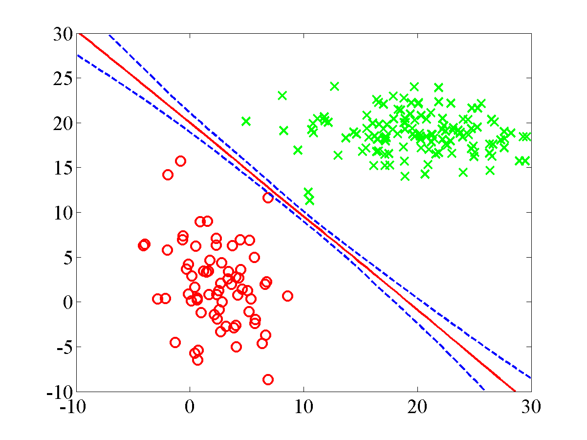
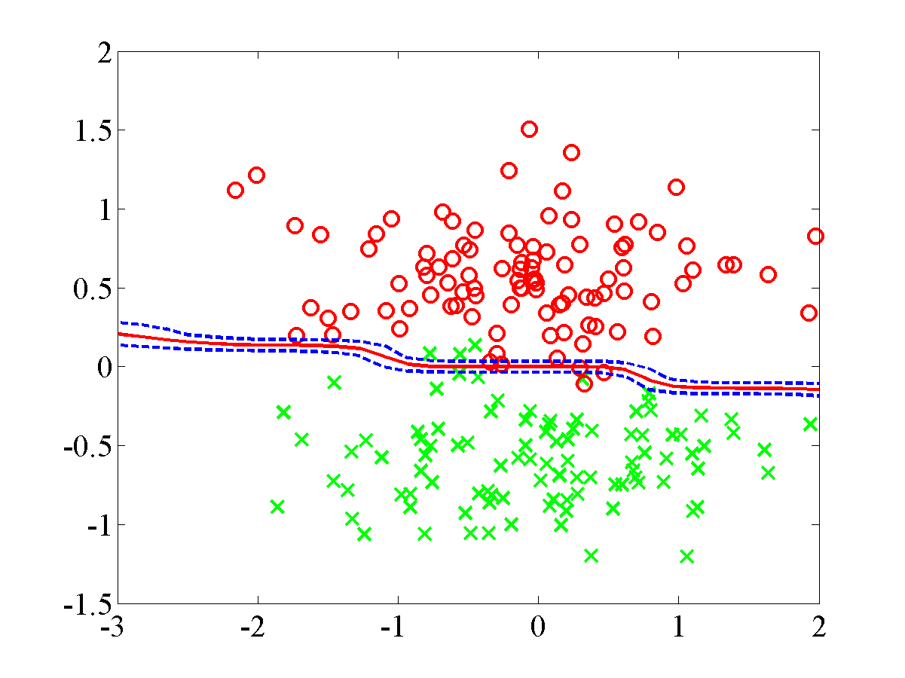
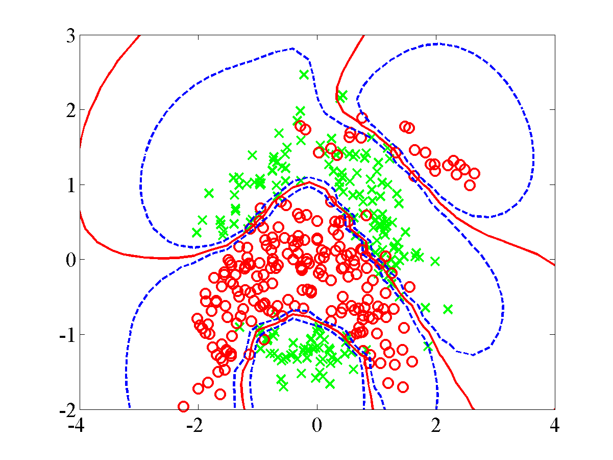
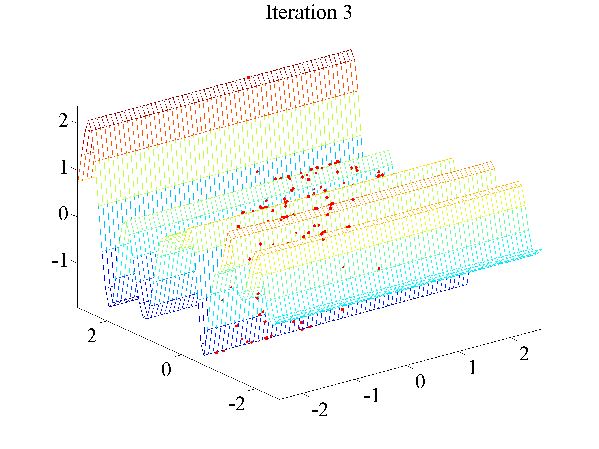
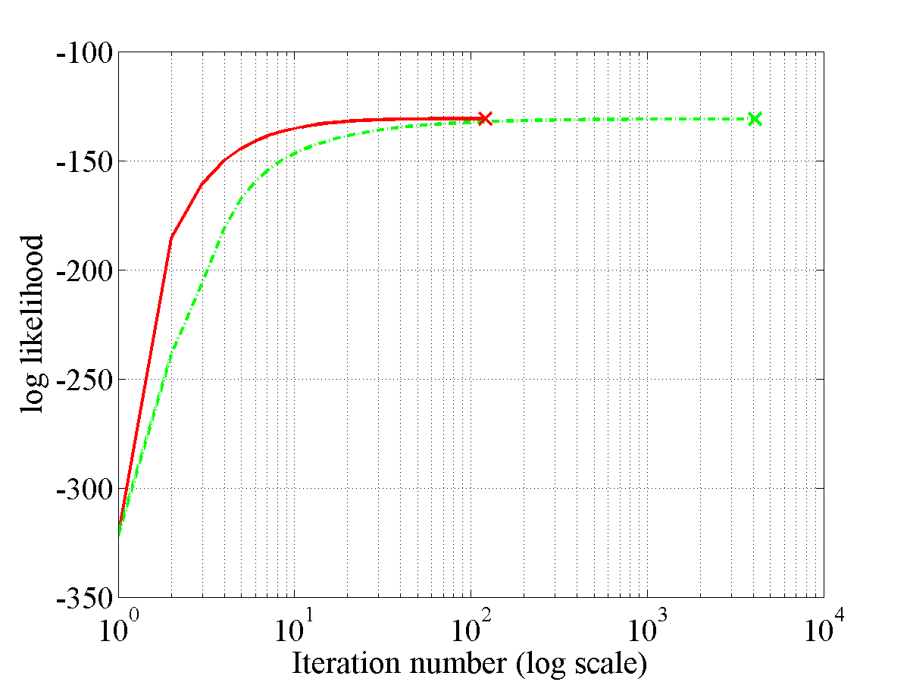
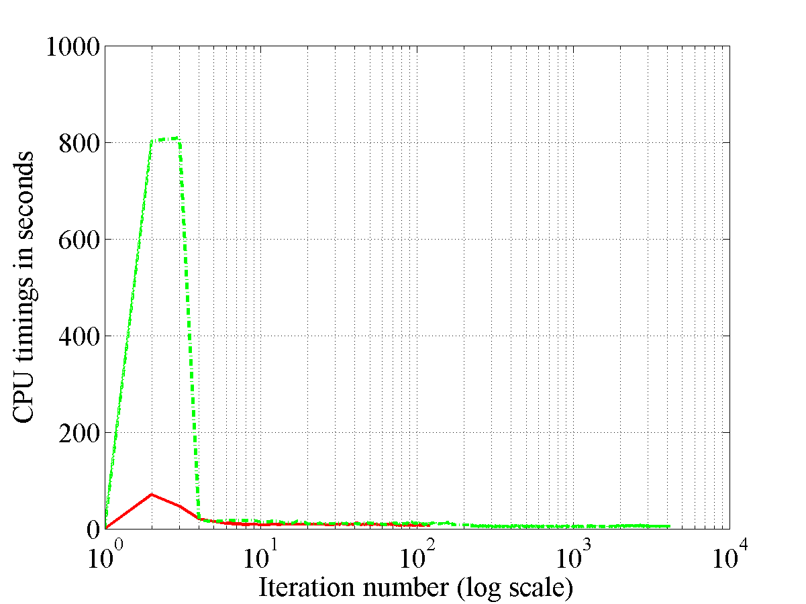

ppa
Probabilistic Point Assimilation: Variational Inference Software for Gaussian Processes.
PPA Software
This page will describe examples of how to use the Probabilistic Point Assimilation Software (PPA) available for download here.
Release Information
Current release is 0.1.
Release 0.1 is the first release of this software.
| Toolbox | Version | +--------------------------------------+-------------------------------------+ | KERN | 0.142 | | NDLUTIL | 0.15 | | OPTIMI | 0.13 | | PRIOR | 0.13 | | MLTOOLS | 0.11 | | NOISE | 0.13 |
Finally you will also need the NETLAB toolbox in your path.
Setting the test up
In order for the code to function correctly, the files need to be set-up in the structure depicted in the following figure

It should be noted that the Gunnar Datasets have had their original directory structure changed. For instance, for the Ringnorm dataset the downloaded structure takes the form
\\home\brain\raetsch\expose\ringnorm\*.asc
but we have it as
\\ROOT\mlprojects\data\ringnorm\*.asc .
in our directory structure. Similarly any of the datasets needs to be in
the above form, with the data files being found within the directory
with the same name. We also note that all the required M file packages
need to be added to the path. All the test scripts are stored at
ROOT/mlprojects/ppa/gunnarTests/ and the test M files are put into the
PPA matlab directory.
Enabling all scripts and M files for the tests
In the following scripts ppaGunnarConvergence.sh, ppaGunnarPlot.sh, ppaGunnar.sh, ppaGunnarResults.sh and ppaTestGunnar.sh the line
path('/home/nk3/mlprojects/matlab/general',path)
needs to be changed to
path('/USERSROOT/mlprojects/matlab/general',path)
where USERSROOT is the location of the mlprojects directory.
It is also noted that the following files need changing to suit the users file store as well, these M files are ppaGunnarConvergence.m, ppaGunnarData.m, ppaGunnarResults.m, ppaGunnarResultsTest.m, ppaGunnarTest.m, ppaPlotConvergenceResults.m, ppaPlotMultipleConvergenceResults1.m, ppaPlotMultipleConvergenceResults2.m and ppaPlotMultipleConvergenceResults3.m.
We need to modify these test M files such that we are calling the
correct directory structure. As such you need to add or change the home
parameter to your ROOT directory. For instance in the files in there
orignal form the files have three home options which are
% My desktop
% HOME = 'h:\';
% My Laptop home
% HOME = 'd:\work';
% My Pascal cluster home
% HOME = '/home/nk3';
These cover the three machines I have run these tests on. You need to change one of these such that
``` % Your Home HOME = 'ROOT';
where `ROOT` is the directory in which the `mlprojects` directory is
stored. With these changes this completes the setup.
Four demos
----------
We have four simple demos that can be run from the directly from the ppa
directory (but still ensure the data stes are in the correct positon
within the directory structure). The first three tests are
classification tests on a linear seperable case, an overlap case and a
Banana dataset. The final case is a very simple regression case noise
model, although we do note that regression for the model is tractable
and does not require the approximation we include this test to show show
how easy it is to plug in different nosie models.
### Linear seperable demo
From the matlab command line, ensure you our within
`/USERSROOT/mlprojects/ppa/matlab.`
Now run the following command at the command prompt
```matlab
>> demppa1
Once the model has reached convergence the following plot should be displayed.
\ This plot shows the final plot for the linear seperable dataset.
Overlap demo
From the matlab command line, ensure you our within
/USERSROOT/mlprojects/ppa/matlab.
Now run the following command at the command prompt
>> demppa2
Once the model has reached convergence the following plot should be displayed.
\ This plot shows the final plot for the overlap dataset.
Banana demo
From the matlab command line, ensure you our within
/USERSROOT/mlprojects/ppa/matlab.
Now run the following command at the command prompt
>> demppa3Once the model has reached convergence the following plot should be displayed.
 This plot shows the final plot for the banana dataset.
Regression demo
From the matlab command line, ensure you our within
/USERSROOT/mlprojects/ppa/matlab.
Now run the following command at the command prompt
>> demppaRegression1Once the model has reached convergence the following plot should be displayed.
 This plot shows the final plot for the regression dataset.
Convergence tests using the scripts
The script files were designed to be run on a SCG managed cluster primarily the Pascal cluster. To run repeat the following
From the server command line run the following
$ bash ppaGunnarConvergenceSCG.shonce all the processes have finished running you can then run
$ bash ppaGunnarplot.shthis will result in the convergence figures being plotted. The EPS plots will be saved in the following location
ROOT\mlprojects\data\DATASETNAME\ICMLconv\ DATASETNAME_1 convFig.eps
ROOT\mlprojects\data\DATASETNAME\ICMLconv\ DATASETNAME_1_cpuFig.eps
where the former is a plot of the convergence of the standard variational method compared with that of the KL corrected bound and the latter is a plot of the CPU times per iteration.
Convergence tests directly from the Matlab command line
The following example is for the banana dataset and for the first fold.
From the matlab command line move to the ppa/gunnarTests directory.
First run the following comman in the gunnarTest folder
>> ppaGunnarConvergence('banana',1)after which there will be a bit of a wait.
After this process has finished now run the following command at the command prompt
>> ppaPlotConvergenceResults('banana',1)This command should result in the following information and plots to be displayed.
KL classification = 0.1181633 and SV classification = 0.1179592
KL loglike = -130.8580181 and SV loglike = -130.8979431
KL total number of iterations = 120.0000000,
SV total number of iterations = 4102.0000000
The difference between the iteration numbers (SV - KL) = 3982.0000000
KL total CPU time = 1127.5400000 and SV total CPU time = 22544.1100000
The difference between the CPU times (SV - KL) = 21416.5700000`
 This plot shows the convergence figure for the banana dataset.
 This plot shows the CPU times figure for the banana dataset.
Note if you wished to run these for any of the other datasets just substitute in the particular data sets name.
Classification tests
Once again the scripts were designed to be run on the SCG managed pascal cluster. To run them you need to set up the files as previously noted.
From the command prompt on the cluster you first need move to the
directory ROOT\mlprojects\ppa\gunnartests\. From there you frist run
the following
>>bash ppaGunnar.sh
this will send a lot of jobs to the cluster. These will take a while to run so be prepared for a wait.
Once these jobs have completed the next step is to run the following script
>>bash ppaGunnarResults.sh
Once again this will send a job to the cluster but unlike the other this should only take a minute to run. Once this job is complete we then have to finally run
>>bash ppaTestGunnar.sh
Once these final jobs has finished you will find in your ROOT
directory a set of .mat files namely
banana.mat, breast-cancer.mat,diabetis.mat, german.mat, heart.mat, titanic.mat, twonorm.mat and waveform.mat.
The mean and standard deviation of the test error for each data set can
be found by first loading the dataset's *.mat (in the following we are
loading the banana data set)
>> bananaLoad = load('banana.mat')
we can then find the mean
>> meanB = mean(bananaLoad.er)
and the standard deviation
>> meanB = std(bananaLoad.er)